Hướng dẫn cách Đăng ký nộp thuế điện tử qua mạng -> Cách lấy giấy nộp tiền thuế điện tử -> Cách nộp thuế điện tử trên trang thuedientu.gdt.gov.vn mới nhất.
- Nộp thuế điện tử là dịch vụ cho phép người nộp thuế lập Giấy nộp tiền điện tử (GNT) vào Ngân sách Nhà nước trực tiếp trên Cổng thông tin điện tử của Cơ quan thuế và được Ngân hàng thương mại (NHTM) xác nhận kết quả giao dịch nộp thuế tức thời.
- Hiện nay, Tổng cục Thuế đã phối hợp với hầu hết các ngân hàng để cung cấp dịch vụ Nộp thuế điện tử nên rất thuận tiện cho NNT (người nộp thuế).
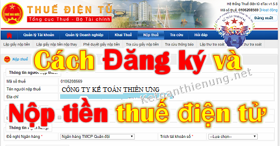
---------------------------------------------------------------------------------
Dưới đây Kế toán Diệu Tâm xin hướng dẫn nộp thuế điện tử cụ thể như sau:
Bước 1: Đăng ký nộp thuế điện tử qua mạng.
(Tức là Đăng ký Tài khoản ngân hàng trên trang nộp thuế điện tử: thuedientu.gdt.gov.vn).
Như vậy: Trước khi thực hiện bước 1 DN bạn cần phải có TK ngân hàng trước.
- Và nhớ là sau khi mở TK ngân hàng xong thì phải đăng ký TK ngân hàng với Sở kế hoạch đầu tư (Không đăng ký là bị phạt nhé). Bước 2: Nộp tiền thuế điện tử qua mạng.
(Tức là lập Giấy nộp tiền thuế điện tử trên trang thuedientu.gdt.gov.vn).
Chú ý: => Nếu DN bạn đã Đăng ký nộp thuế điện tử rồi mà chỉ muốn Nộp thuế điện tử (Lấy giấy nộp tiền thuế tử) thì bỏ qua bước 1 và làm theo bước 2 nhé.
- Trình tự các bước cụ thể như sau:
Bước 1: Thủ tục Đăng ký nộp thuế điện tử qua mạng:
|
- Tất cả các DN trên cả nước: - > Sẽ kê khai và nộp thuế điện tử trên trang Thuedientu.gdt.gov.vn |
Cách đăng ký nộp thuế điện tử trên trang thuedientu.gdt.gov.vn:
- Truy cập vào trang thuedientu.gdt.gov.vn -> Doanh nghiệp -> Đăng nhập.
Chú ý: Có 3 dạng Tài khoản đăng nhập (TK chữ ký số - Token):
- MST: -> Là tài khoản để nộp các Tờ khai (Không nộp được Tiền thuế)
- MST-NT: -> Là tài khoản để nộp Tiền thuế (Không nộp được Tờ khai)
- MST-QL -> Là Tài khoản quản lý 2 TK trên, có thể cấp quyền cho 2 TK trên và cũng nộp được Tờ khai + Tiền thuế.
-> 3 dạng TK trên đều cùng 1 mật khẩu nhé.
Như vậy: Khi các bạn đăng nhập bằng Tài khoản Chữ ký số (Token, và nhớ là phải cắm Token vào máy tính nhé) thì thêm chữ "-QL" vào sau nhé.
- VD: MST là: 0112456835 -> thì gõ: 0112456835-QL như vậy thì mới hiển thị phần "Nộp thuế", nếu ko thêm chữ "ql" sẽ không hiển thị phần "Nộp thuế" nhé, chi tiết như hình dưới nhé: 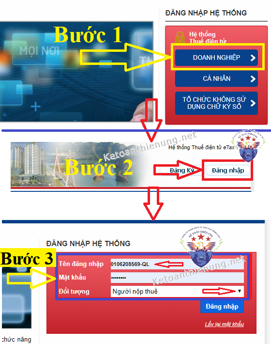 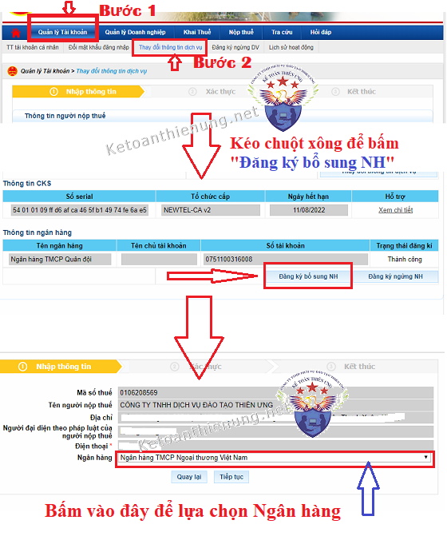 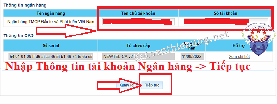 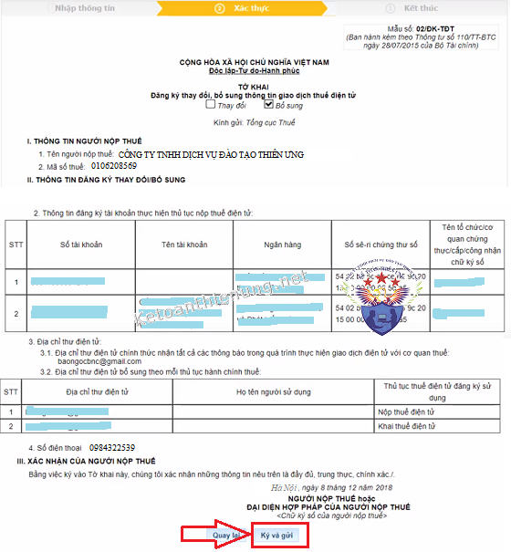
- Sau khi đăng nhập thành công các bạn bấm vào -> "Quản lý Tài khoản" -> "Thay đổi thông tin dịch vụ" -> Tìm mục "Thông tin ngân hàng" bấm "Đăng ký bổ sung NH"
- Sau khi chọn xong Ngân hàng -> các bạn nhập Thông tin ngân hàng -> rồi Tiếp tục:
Lưu ý: Phải cắm Chữ ký số vào mới ký và gửi được nhé
Cuối cùng: Sau khi ký và gửi thành công -> Các bạn phải TẢI MẪU ĐĂNG KÝ đó về (mẫu như hình bên dưới) 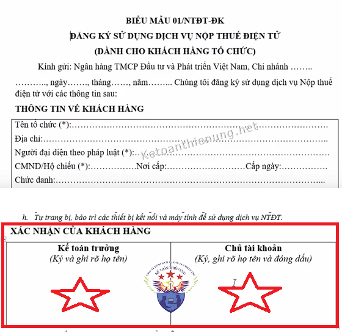
-> Điền hết tất cả các thông tin. -> Ký tên, đóng dấu của Doanh nghiệp.
-> Đi nộp Mẫu đó trực tiếp cho Ngân hàng (nơi DN mở tài khoản).
-> Sau khi đã nộp Mẫu đăng ký này cho Ngân hàng -> Các bạn đợi Ngân hàng trả lời kết quả nhé
- Và sau khi có kết quả, các bạn sẽ thấy hiển TK ngân hàng đó trong phần "Nộp Thuế" nhé
=> Như vậy là đã đăng ký xong TK ngân hàng để nộp Tiền thuế điện tử -> Cách nộp Tiền thuế điện tử, các bạn xem Bước 2 bên dưới nhé.
-----------------------------------------------------------------------------------
Cách nộp tiền thuế điện tử trên trang thuedientu.gdt.gov.vn:
- Truy cập vào trang thuedientu.gdt.gov.vn -> Chọn mục "Doanh nghiệp" -> Rồi "Đăng nhập"
Chú ý: Đăng nhập bằng MST-QL. VD: MST là: 0112456835 -> thì gõ: 0112456835-QL như vậy thì mới hiển thị phần "Nộp thuế", nếu ko thêm chữ "ql" sẽ không hiển thị phần "Nộp thuế" nhé.
(Chi tiết như trên phần 1 nhé).
-> Tiếp đó chọn mục "Nộp thuế" -> "Lấy giấy nộp tiền" -> Chọn "Ngân hàng" -> "Tiếp tục"
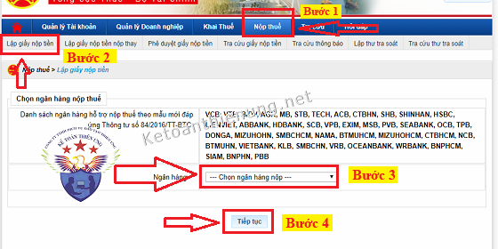
Lập Giấy nộp tiền thuế điện tử:
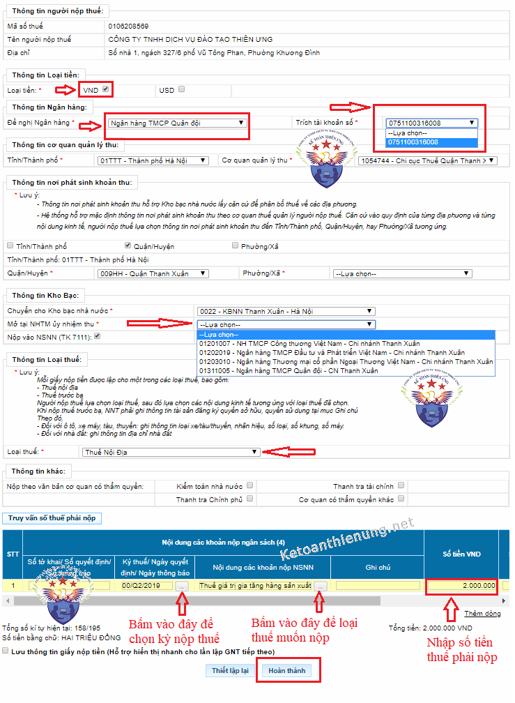
Cách viết giấy nộp tiền thuế điện tử:
- Các bạn phải chú ý những phần mũi tên như trên hình nhé. VD: Loại tiền, Số tài khoản ngân hàng muốn nộp, Số tài khoản ngân hàng ủy nhiệm thu ...
- Đặc biệt phần: Kỳ thuế và Nội dung các khoản nộp NSNN -> Các bạn phải bấm vào ô nhỏ ... bên cạch (Mũi tên trên hình) -> Để chọn kỳ thuế (Kỳ theo tháng, Qúy, Năm) và chọn loại Thuế phải nộp cho Chính xác. -> Tiếp đó là số Tiền thuế phải nộp, cụ thể như sau:
VD: Muốn nộp Thuế GTGT quý 2/2021 -> Tích vào chọn ô "Nộp thuế theo quý" -> Tiếp đó gõ "Q2/2021", như hình dưới:
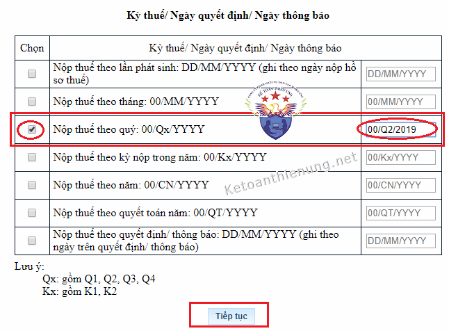
Phần Nội dung các khoản nộp NSNN: Bấm vào mũi tên phần "Chọn mục" để chọn loại thuế cần nộp -> Tiếp đó là bấm vào "Tra cứu" để chọn "Mã NDKT".
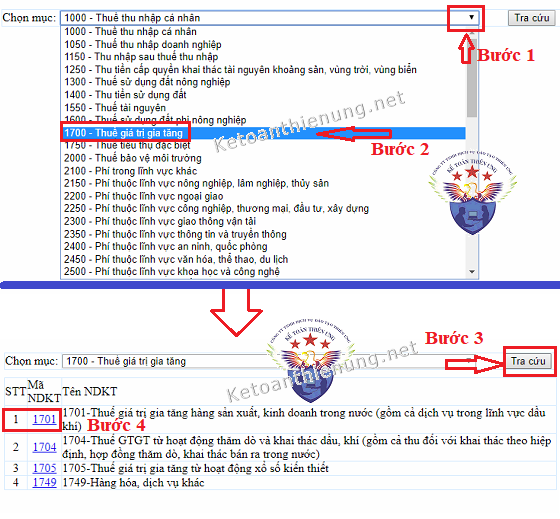
Ví dụ:
- Lập giấy nộp thuế GTGT -> Bấm tìm mục 1700 - Thuế giá trị gia tăng -> Tìm mã 1701.
- Lập giấy nộp tiền thuế môn bài -> Bấm tìm mục 2850 - Lệ phí quản lý nhà nước liên quan đến sản xuất, kinh doanh -> Tìm tới các mã 286x (2862, 2863, 2864 - Căn cứ vào Mức vốn điều lệ của DN để chọn mã NDKT này cho đúng nhé).
- Tiếp đó nhớ là phải nhập số tiền thuế phải nộp nhé -> Tiếp đó bấm "Hoàn thành" Màn hình sẽ xuất hiện Giấy nộp tiền vào ngân sách nhà nước.
-> Các bạn kiểm tra lại 1 lần nữa các thông tin như: TK ngân hàng, Tờ khai thuế, Kỳ thuế, số tiền thuế phải nộp, Mã NDKT, Mã Chương ...
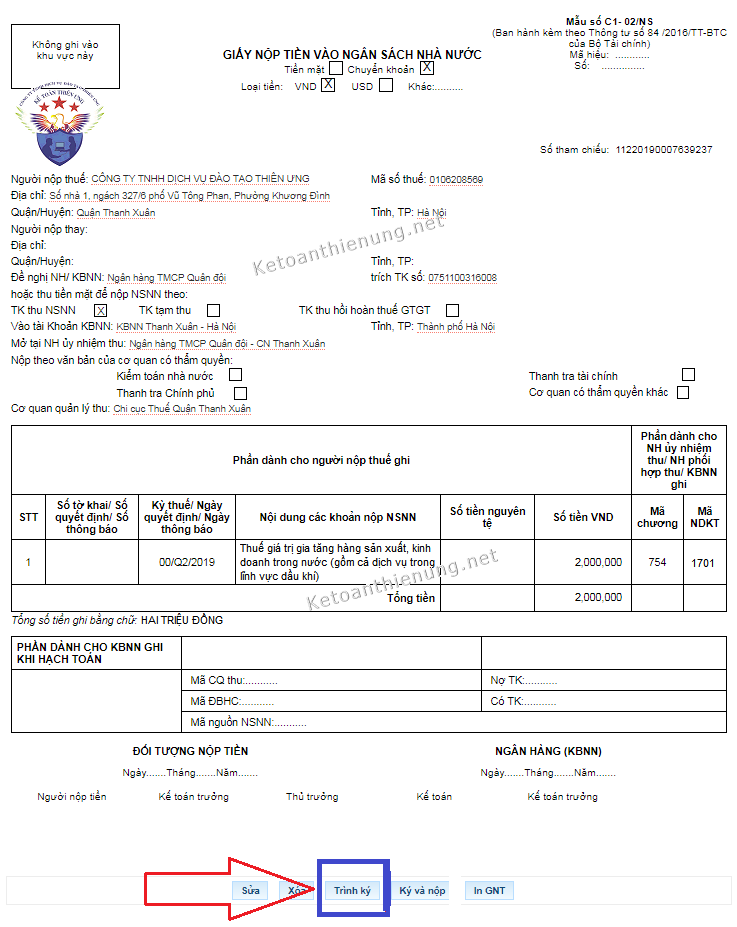
=> Tiếp đó bấm Trình ký -> Kết thúc.
-> Phê duyệt giấy nộp tiền -> Chọn đúng Giấy nộp tiền thuế muốn nộp -> Hiển thị -> Ký và nộp -> Nhập mã PIN. như hình dưới:
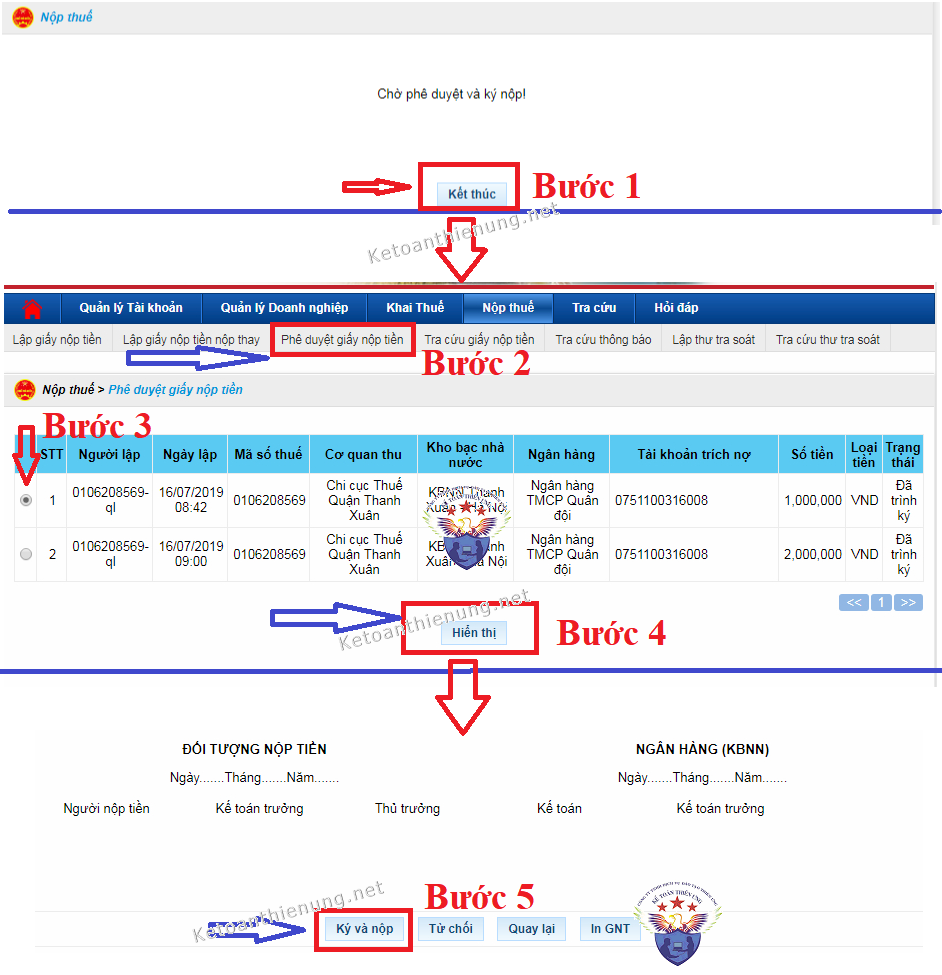
- Như vậy là đã nộp xong tiền thuế điện tử.
Cách kiểm tra xem đã nộp thành công hay chưa -> Bạn có thể bấm vào mục "Tra cứu" để kiểm tra nhé.
Bạn muốn học cách kê khai thuế GTGT, TNCN ... cách xác định chi phí được trừ, không được trừ; Cách lập tờ khai Quyết toán thuế TNCN, TNDN; Kỹ năng quyết toán thuế ...
-> Có thể tham gia: Lớp học kế toán thuế thực tế chuyên sâu.
--------------------------------------------------------